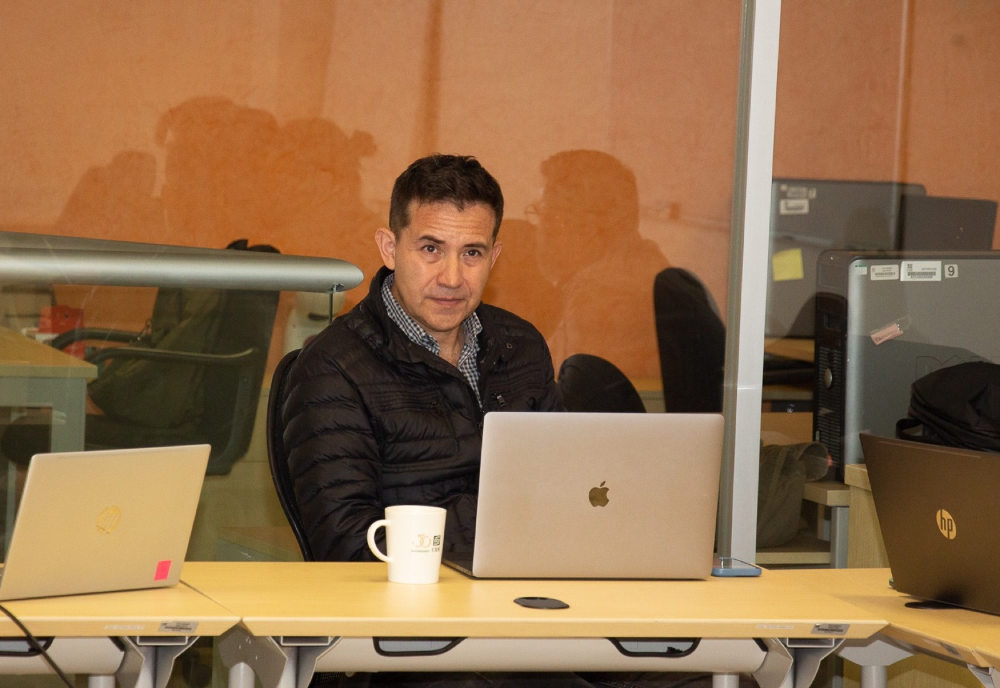
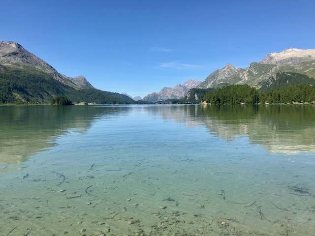
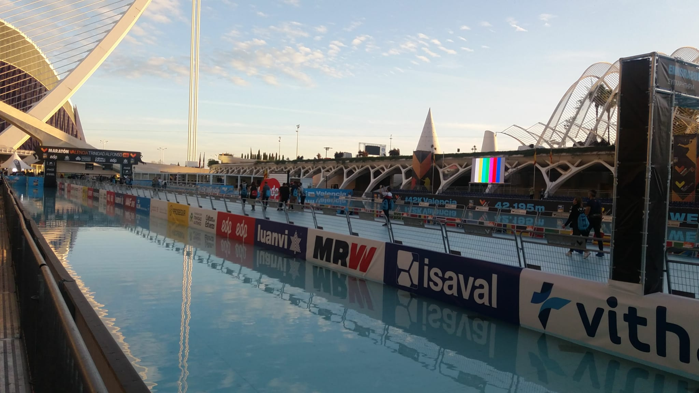

My work sits at the intersection of comparative politics, political economy, political behavior, and quantitative methodology. I am especially interested in how political competition varies across territory and how those differences shape accountability, representation, and democratic governance.
Mi trabajo se ubica en la intersección de la política comparada, la economía política, el comportamiento político y la metodología cuantitativa. Me interesa especialmente cómo varía territorialmente la competencia política y cómo esas diferencias moldean la rendición de cuentas, la representación y la gobernanza democrática.
My academic trajectory has crossed Mexico and the United States, and that movement continues to shape how I think about institutions, migration, universities, and public life.
Mi trayectoria académica ha transcurrido entre México y Estados Unidos, y ese tránsito sigue influyendo en cómo pienso las instituciones, la migración, las universidades y la vida pública.
Outside research, I write for broader audiences, run, and enjoy building tools and projects that connect ideas to data.
Fuera de la investigación, escribo para públicos más amplios, corro y disfruto construir herramientas y proyectos que conectan ideas con datos.

Academic LeadershipLiderazgo académico
From 2024 to 2026, I served as Director of CIDE’s División de Estudios Políticos during a period of significant institutional disruption and unusually high faculty turnover across both the division and CIDE more broadly. A central part of my work was stabilizing the division, rebuilding its academic capacity, and preserving the continuity of its teaching and research programs.
Entre 2024 y 2026 fui Director de la División de Estudios Políticos del CIDE durante un periodo de considerable disrupción institucional y una rotación extraordinariamente alta de profesores, tanto en la División como en el CIDE en general. Una parte central de mi trabajo consistió en estabilizar la División, reconstruir su capacidad académica y garantizar la continuidad de sus programas de docencia e investigación.
Faculty recruitment was a particularly important part of that effort. In a highly complex hiring environment marked by severe resource constraints, I led processes that resulted in two tenure-track appointments and worked to ensure that faculty members had the institutional conditions necessary to continue their research, teaching, and professional development without interruption.
El reclutamiento de profesores fue una parte especialmente importante de ese esfuerzo. En un entorno de contratación particularmente complejo y marcado por fuertes restricciones de recursos, conduje procesos que culminaron en dos contrataciones de tenure track y trabajé para garantizar que los profesores de la División contaran con las condiciones institucionales necesarias para continuar, sin interrupciones, su investigación, docencia y desarrollo profesional.
I also placed particular emphasis on reorganizing the MA and PhD programs in Political Science. The reforms focused on strengthening admissions, improving student progression and degree completion, clarifying curricular pathways, and rebuilding the programs’ capacity to recruit and train new cohorts of political scientists.
También puse un énfasis especial en la reorganización de los programas de Maestría y Doctorado en Ciencia Política. Las reformas se concentraron en fortalecer las admisiones, mejorar la progresión y terminación de los estudiantes, clarificar las trayectorias curriculares y reconstruir la capacidad de ambos programas para reclutar y formar nuevas generaciones de politólogos.
At the undergraduate level, one of my main priorities was rebuilding the applicant pipeline for CIDE’s BA in Political Science, a program that has historically ranked among the top three political science programs in Mexico. Following the decline in applications associated with CIDE’s institutional crisis, I focused on restoring the program’s visibility and strengthening recruitment.
En el nivel de licenciatura, una de mis principales prioridades fue reconstruir el flujo de aspirantes a la Licenciatura en Ciencia Política del CIDE, un programa que históricamente se ha ubicado entre los tres mejores del país en su disciplina. Después de la caída en el número de aspirantes asociada con la crisis institucional del CIDE, concentré mis esfuerzos en recuperar la visibilidad del programa y fortalecer su capacidad de reclutamiento.
From February to April 2026, I led a broader institutional effort to increase the visibility of all of CIDE’s academic programs, many of which had experienced significant declines in applications during the crisis. The initiative went beyond a traditional recruitment campaign: I launched a large-scale communications effort and coordinated the work of CIDE’s promotion, communications, and central academic offices around a common strategy for student recruitment and program visibility.
Entre febrero y abril de 2026 lideré además un esfuerzo institucional más amplio para incrementar la visibilidad de todos los programas académicos del CIDE, muchos de los cuales habían experimentado reducciones importantes en el número de aspirantes durante la crisis. La iniciativa fue más allá de una campaña tradicional de promoción: lancé una estrategia de comunicación de gran alcance y coordiné los esfuerzos de las áreas de promoción, comunicación y de la Coordinación General de Docencia alrededor de una estrategia común de reclutamiento y visibilidad académica.
Beyond academiaMás allá de la academia

